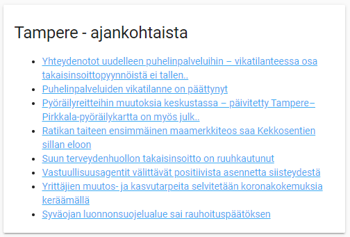
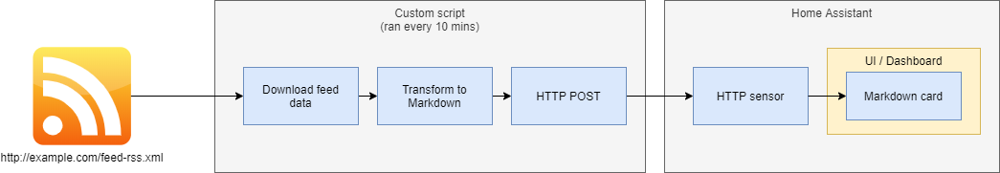
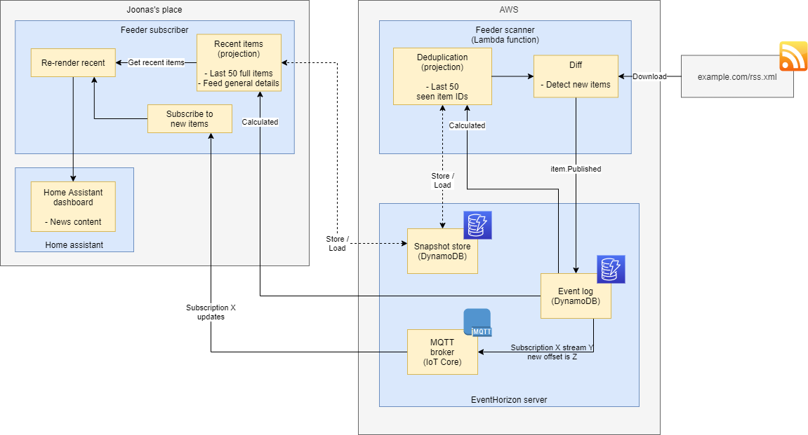

Displaying RSS feed with Home Assistant
I wanted to display news in my Home Assistant dashboard.

Home Assistant has “Feedreader” integration which supports getting data from an RSS feed into HA’s event bus, but it doesn’t mention a way of displaying the entries (or storing them as sensor attributes that would be accessible from UI).
There’s 3rd party integration and an UI component to do the job, but I wanted to do this with as close to vanilla Home Assistant as possible. (I’m especially hesitant to add 3rd party HTML/JS into the mix.)
It’s surprising there’s no way to do this, given that Home Assistant supports so many common things out of the box.
My first, bad solution
My naïve first solution was to use an <iframe>-based RSS widget, which Home Assistant
supports (Webpage card), and it worked
but had the following caveats:
- It was surprisingly hard to find a free RSS-as-iframe-widget service, I think I landed with RSS Dog as the least bad option
- The external service’s visual theme probably doesn’t match with your Home Assistant theme’s visuals
- Home Assistant doesn’t support periodic refreshes, so you’re stuck with the RSS widget service’s own refresh feature - if it has one to begin with
- Iframes are always much heavier to execute than just have Home Assistant natively display its own data
A better solution
My solution was to:
- Have a script outside of Home Assistant pull the RSS feed
- Transform it into Markdown
- Push it via Home Assistant’s HTTP API as a sensor attribute
- It needs to be an attribute (not a state), because Home Assistant limits state values to <= 255 chars
- Display the Markdown in UI as a Markdown card with a template that accesses the sensor attribute

Pushing news to Home Assistant looks somewhat like this:
$ curl \
-x '{"state":"", "attributes": {"content_md": "- News item 1\n- News item 2"}}' \
-h "Content-Type: application/json" \
-h "Authorization: Bearer ..." \
http://localhost:8123/api/states/sensor.mynews
The content (in our case, a template) for the Markdown card looks like this:
{{state_attr('sensor.mynews', 'content_md')}}
Hope this helps you!
UPDATE: Someone asked me for my code, and I decided to polish it a bit and put it up as a ready-to-use program: RSS-to-homeassistant.
My over-engineered solution
Now this one is for total nerds and not related to Home Assistant anymore..
Since I had to do the RSS pulling myself anyway, and I am software engineer and a data hoarder, I push all new RSS items into an event log (therefore I can store the news timeline forever) whose events get pushed to my Home Assistant in realtime.

This software is open source and under the name Feeder.

Thanks for reading! 😍
If you like my writing, consider following me on Twitter.
Stay updated on my blog posts & projects - sign up for
my newsletter. 🚀
No spam, unsubscribe any time.
RSS also available.